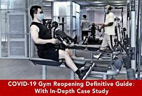

COVID-19
IronGym se encuentra cerrado. Actualmente debido a la contingencia y indicaciones del estado, han requerido el cierre temporal de toda actividad y negocio (NO ESCENCIAL) para evitar los contagios del virus Covid-19, IronGym se preocupa por la situacion y te mantiene al tanto sobre como va evolucionando el tema, aportando informacion diaria de bastante valor de todo tipo. Nuestro principal proposito es informar y ayudar!
NUEVO: Irongym nueva fecha de apertura?
Todo lo que debes saber
Actualmente no se sabe fecha exacta de la apertura de gimnasios.
Se sabe que se podran abrir hasta que el semaforo verde este en el estado, pero debido a las casos de contagios, nuestro estado se manteniene en semaforo ROJO dada la sutuacion, lamentamos no poder iniciar labores pero en cuanto haya una fecha exacta se actualizara con anticipacion y se les informara todo sobre este tema...
NUEVO: Como sera el nuevo sistema de trabajo?
Nuevo sistema de trabajo debido al virus
IronGym esta por implementar un nuevo sistema de trabajo Ref.2020, En que consistira?, los parametros que nos marcan es mantener sana distancia, mantener una higiene apropiada de manos, y usar cubrebocas.Las nuevas reglas protocolarias de el ingreso al campo IronGym sera entrar con cubrebocas, mantener su sana distancia, estricto control de limpieza al usar aparatos, sanitizacion diaria y programada de todo el local, y por ninguna razon se permitira la entrada a usuarios con sintomas de covid, horarios de entrenamientos especiales de acuerdo a no acumular aglomeracion de gente en espacios cerrados y demas.En un par de dias saldra el informe oficial de todo esto.
Mantente Activo
Activida fisica y alimentacion balanceada evitara gran parte de la posibilidad de ser un afectado por el virus actualSe nos ha informado que personas con buena calidad de vida, con una actividad fisica concurrente, y una alimentacion balanceada son menos propensos a contraer el virus, en cambio personas con defensas bajas, personas de la tercera edad y personas con enfermedades cronicas no graves, tienen mayor posiibilidad de contraer el virus, por eso te recomendamos llevar a cabo las recomendaciones que te damos:Actividad fisica minima de 30min diariosUna alimentacion balanceada